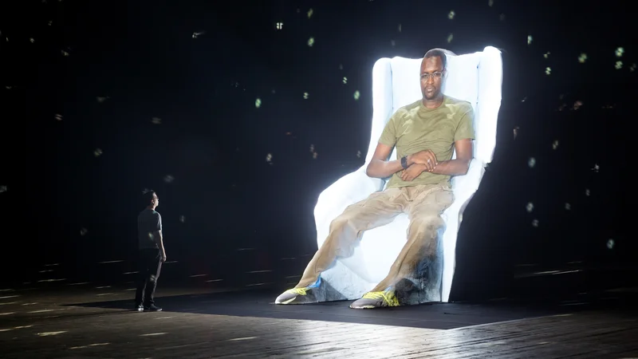

El lenguaje como materia artística
El lenguaje ocupa un lugar central en la obra de Laurie Anderson. Sus piezas exploran cómo las palabras construyen significado y cómo pueden ser transformadas mediante la repetición, la fragmentación y el uso de tecnología.
A través de estas estrategias, el lenguaje deja de ser únicamente un medio de comunicación para convertirse en un material artístico. Sus obras revelan las tensiones entre lo que se dice, lo que se escucha y lo que se interpreta.

La performance como experiencia
La performance es uno de los principales formatos en los que desarrolla su trabajo. En sus presentaciones, combina música, proyecciones visuales y narración en vivo para crear experiencias inmersivas.
Estas performances no solo transmiten un contenido, sino que construyen un espacio de interacción con el público. La presencia del cuerpo, la voz y la tecnología genera una relación directa que redefine el rol del espectador.
El trabajo de Laurie Anderson se caracteriza por la integración de tecnologías en sus procesos creativos, no como un fin en sí mismo, sino como una herramienta para expandir el lenguaje artístico.

Un ejemplo de una performance multimedial, con intención, con un mensaje, es la obra de Habeas Corpus.
Esta nueva y apasionante obra de arte entrelaza cine, escultura, música y vídeo para examinar la historia de Mohammed el Gharani, uno de los detenidos más jóvenes en la Bahía de Guantánamo.